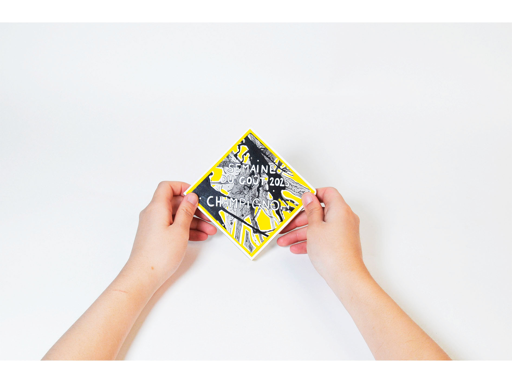

Les Champignons
Technique : Logo vectoriel, Aquarelle
Création d’un leporello pour la Semaine du Goût. Destiné aux jeunes lecteur·rices, il mêle approche scientifique et imaginaire pour faire découvrir le monde fascinant des champignons. Son format en losange se déploie pour créer un effet de surprise, tout en stimulant la curiosité et l’émerveillement.
